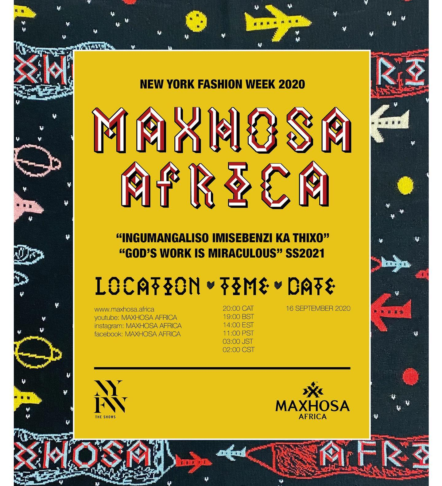
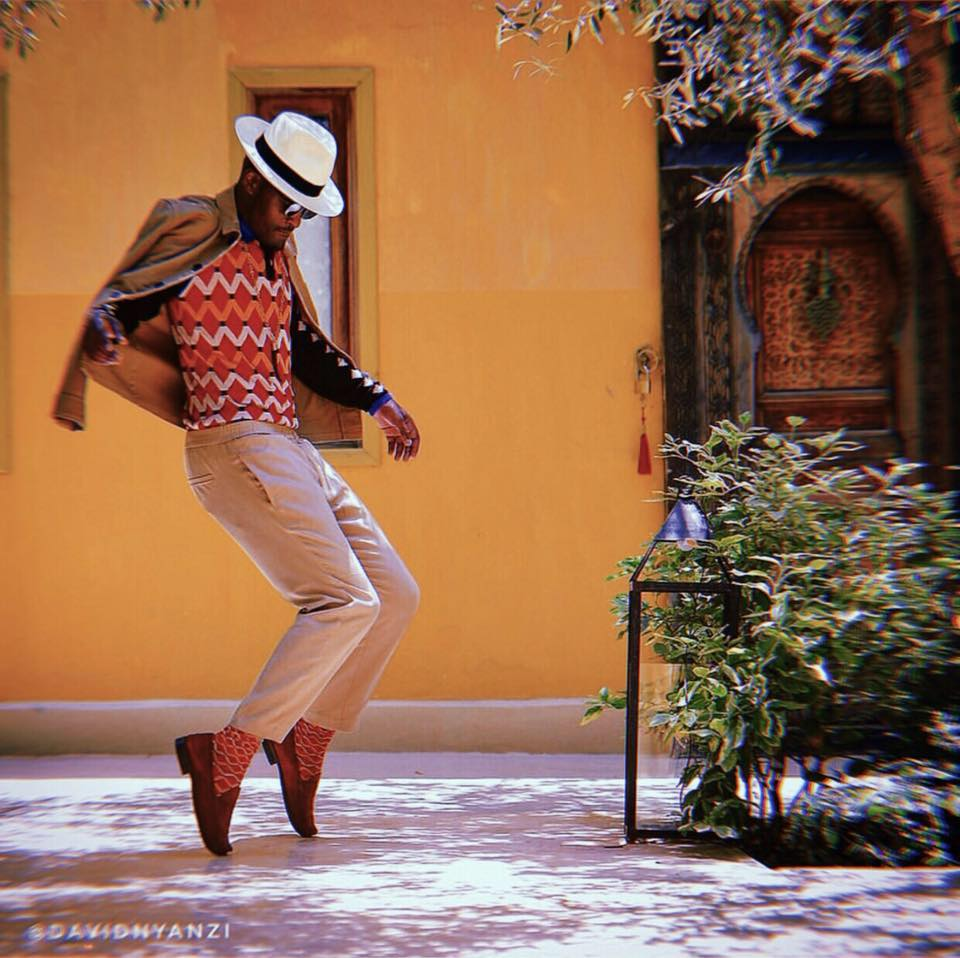
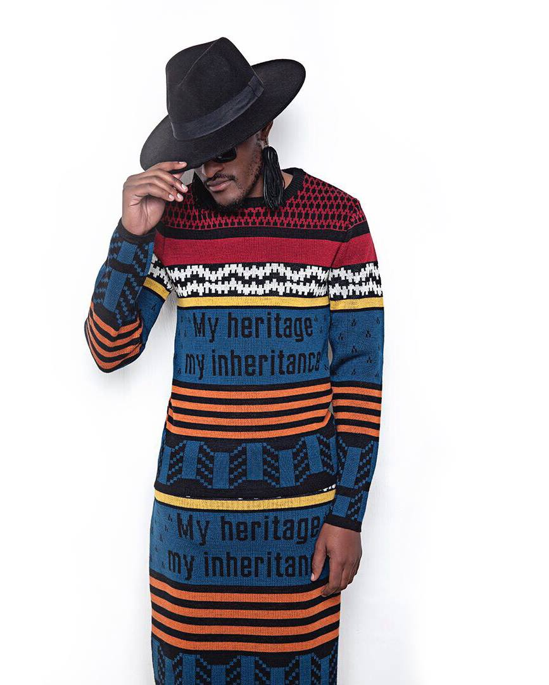

Brand Sorry
 MAXHOSA BY LADUMA is a South African knitwear brand founded in 2012 by Laduma Ngxokolo. This was with desire to explore knitwear design solutions that would be suitable for amakrwala (Xhosa initiates). His initial vision was to create a modern Xhosa-inspired knitwear collection that would be suitable for this market. As a person who has undergone the process, Laduma felt that he had to develop premium knitwear that celebrates traditional Xhosa aesthetics.Along his journey into exploring astonishing traditional Xhosa beadwork patterns, symbolism and colours, he discovered that they would be the best source of inspiration for the knitwear, which he then reinterpreted into modern knitwear.
MAXHOSA designs showcase the beauty, culture, language and aspiration of the Xhosa people. Evolved and amended in a modern way and a current design context it translates into a form that resonates with multiple fashion markets globally.
Brand Aspiration, become a leading African lux, premium and mass heritage fashion & lifestyle brand.
Landuma's Profile

Laduma Ngxokolo is one of Africa's finest knitwear designer & innovator of the Xhosa (one of the South African dominant ethnic group) inspired knitwear brand MAXHOSA BY LADUMA. Ngxokolo established the brand 2011 with a desire to explore knitwear design solutions that would be suitable for the amakrwala (Xhosa initiates) traditional dress.
As a person who has undergone the ritual, he felt that he needed to develop a premium knitwear range that celebrates traditional Xhosa beadwork aesthetics, using South African mohair and wool. Since then, Ngxokolo has received numerous achievements and captures the hearts of many fashion lovers and media from South Africa, London, Paris, Amsterdam, Oslo, Berlin and New York
Landuma's Profile

Ngxokolo recently won the 2015 Vogue Italia Scouting for Africa prize to showcase his collections at the Palazzo Morando Show in Milan, Italy. Furthermore, Ngxokolo was awarded the 2014 WeTransfer Scholarship to study masters in Material Futures at the Central St. Martins and graduated in 2016. New African Magazine named him one of the 100 Most Influential Africans of 2017.
Through his work, Laduma is an agent of change, shifting and evolving with the changing times and further engaging in the dialogue that keeps pushing traditional culture toward the future.